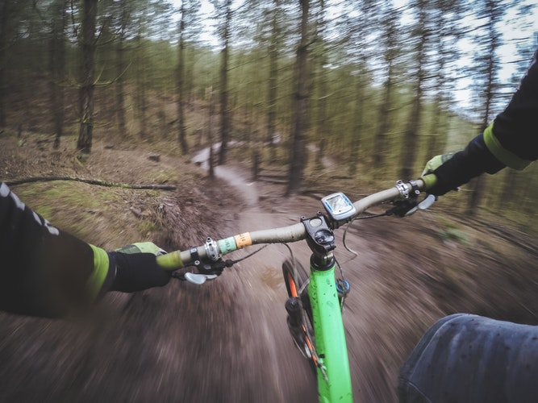
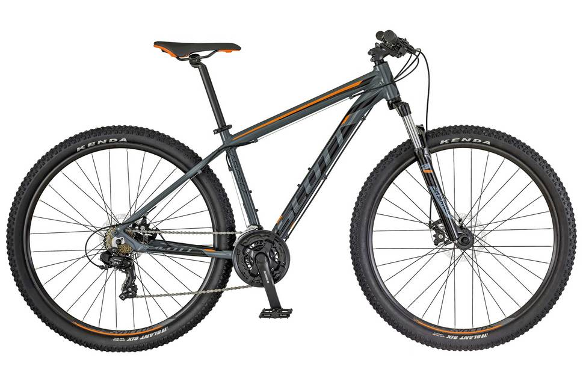

About Mountain Biking

Mountain biking is one of the most exciting sports in the world.
There are four main disciplines in competitive mountain biking: downhill, four cross, cross-country and trailquest.
They all require fitness, bravery and amazing bike control at scary speeds.
But they are also very different in style from each other.
Types of Mountain Bikes

Mountain bikes are bicycles that have been created specifically for off-road cycling. The main components of a mountain bike are durability, suspension, and versatility. Mountain bikes share similarities with other bikes, but incorporate features designed to enhance durability and performance in rough terrain. These typically include a front or full suspension, large knobby tires, more durable wheels, more powerful brakes, lower gear ratios for climbing steep grades, and higher gear ratios for going down steep grades. Mountain bikes are typically ridden on mountain trails, singletrack, fire roads, and other unpaved surfaces.
Why Ride with us?

From the sagebrush to high mountain lakes, Montana offers a variety of scenery and trail experiences. You will find great places for family rides as well as technical expert trails for both ATV and dirt bike enthusiasts in Montana.
There's a reason Montana's nickname is Big Sky Country. Since Montana is the fourth largest state, there's plenty of space to discover. A great way to explore Montana is on two wheels with the help of a little manpower. Ride across the high plains. Climb mountain passes. Cruise through charming towns with welcoming locals.